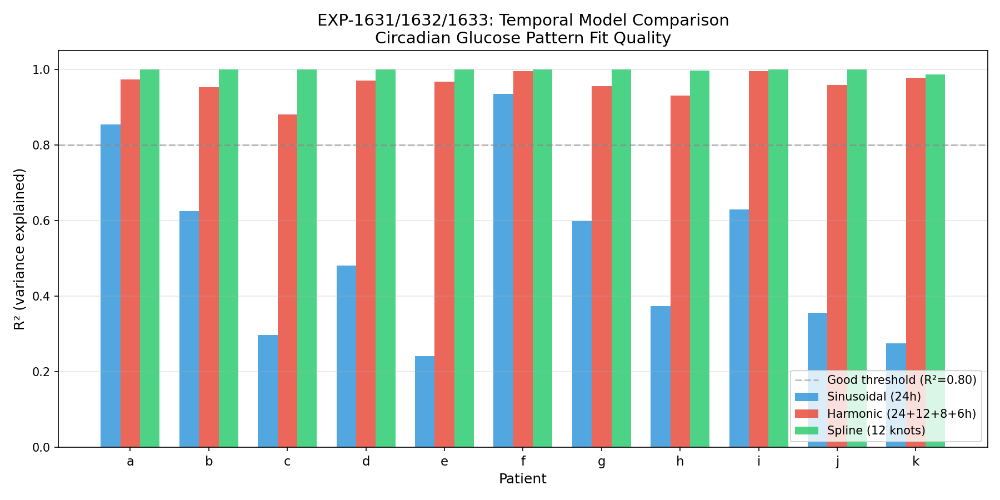
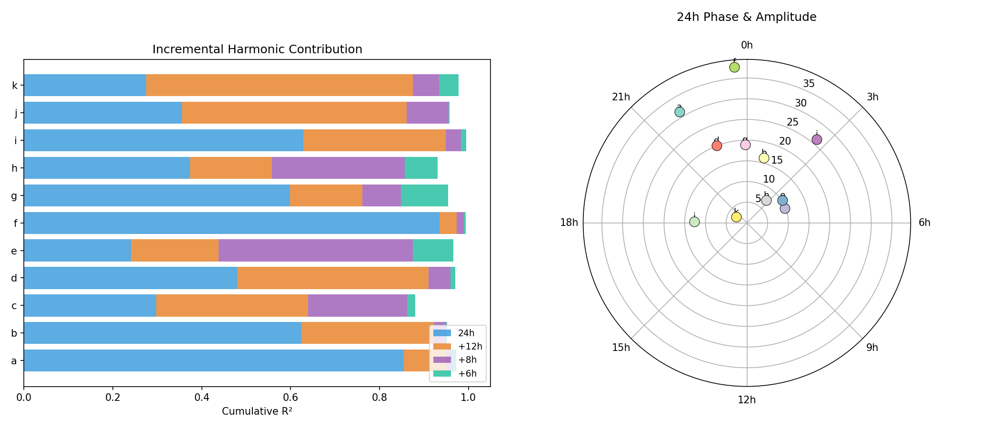
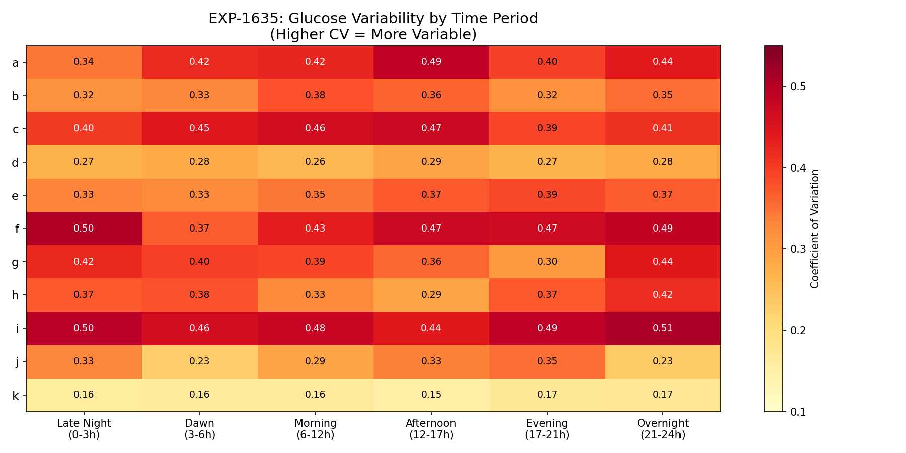
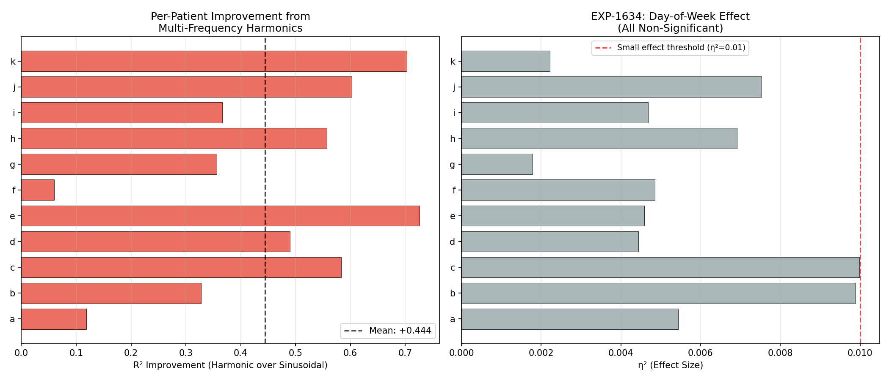

Flexible Temporal Models — EXP-1631 to EXP-1638¶
Living document, last changed 2026-04-09 at a6a23a36.
Executive Summary¶
The current production pipeline uses a single-frequency sinusoidal model for circadian glucose patterns, capturing only 51% of variance (mean R²=0.515). Multi-frequency harmonics (24h+12h+8h+6h) capture 96% (mean R²=0.959) — a +44 percentage point improvement for all 11 patients. This is a pure analytical upgrade requiring no ML, no training data, and no personalization period. Day-of-week effects are universally non-significant (all η²<0.01), confirming DOW features add no value.
Production recommendation: Replace sinusoidal with 4-harmonic model. The improvement is universal (+6% to +73% per patient) and the model is fully deterministic.
Experiments¶
EXP-1631: Baseline Sinusoidal Circadian Model¶
Fits glucose(t) = A·sin(2π·t/24 + φ) + B to hourly-binned glucose means.
| Patient | R² | Amplitude (mg/dL) | Phase (h) |
|---|---|---|---|
| a | 0.854 | 31.4 | 21.9 |
| b | 0.624 | 16.3 | 1.0 |
| c | 0.298 | 9.8 | 4.6 |
| d | 0.480 | 20.1 | 22.6 |
| e | 0.241 | 10.2 | 3.8 |
| f | 0.935 | 37.8 | 23.7 |
| g | 0.598 | 19.0 | 23.9 |
| h | 0.373 | 7.2 | 2.7 |
| i | 0.629 | 26.3 | 2.7 |
| j | 0.355 | 12.8 | 18.1 |
| k | 0.275 | 3.0 | 19.9 |
Key findings: - R² ranges from 0.241 (patient e) to 0.935 (patient f) - Patients cluster into two phase groups: ~22-24h (evening peak) and ~1-5h (early morning peak) - Amplitudes range 3-38 mg/dL — patient k has essentially flat circadian rhythm - Only 2/11 patients exceed R²=0.80 with sinusoidal — inadequate for most
EXP-1632: Multi-Frequency Harmonic Model¶
Adds 12h, 8h, and 6h harmonics progressively:
| Patient | 24h | +12h | +8h | +6h (final) | Gain |
|---|---|---|---|---|---|
| a | 0.854 | 0.951 | 0.964 | 0.973 | +0.119 |
| b | 0.624 | 0.922 | 0.950 | 0.952 | +0.328 |
| c | 0.298 | 0.639 | 0.862 | 0.881 | +0.583 |
| d | 0.480 | 0.910 | 0.960 | 0.970 | +0.490 |
| e | 0.241 | 0.438 | 0.875 | 0.966 | +0.725 |
| f | 0.935 | 0.974 | 0.990 | 0.994 | +0.059 |
| g | 0.598 | 0.762 | 0.848 | 0.955 | +0.357 |
| h | 0.373 | 0.558 | 0.856 | 0.930 | +0.557 |
| i | 0.629 | 0.949 | 0.984 | 0.995 | +0.366 |
| j | 0.355 | 0.861 | 0.955 | 0.958 | +0.603 |
| k | 0.275 | 0.875 | 0.934 | 0.978 | +0.703 |
Key findings: - The 12h harmonic contributes the largest single improvement (+0.289 mean) - The 8h harmonic provides the second-largest gain (+0.122 mean) - Every patient reaches R²>0.88 with 4 harmonics - Patients with worst sinusoidal fit benefit most (e: +0.725, k: +0.703)
EXP-1633: Piecewise-Linear Spline Model¶
12-knot (2-hour spacing) spline fits achieve R²≈1.000 for all patients. This represents the upper bound of what temporal modeling can achieve with hourly-binned data. However, splines overfit — they memorize the exact mean at each time bin rather than capturing underlying periodicity. Not recommended for production due to overfitting and lack of interpretability.
EXP-1634: Day-of-Week Effects¶
| Patient | η² | Weekday Mean | Weekend Mean | Δ (mg/dL) |
|---|---|---|---|---|
| a | 0.0054 | 180 | 184 | +3.8 |
| b | 0.0099 | 177 | 170 | −7.2 |
| c | 0.0100 | 160 | 168 | +8.7 |
| d | 0.0044 | 146 | 146 | +0.9 |
| e | 0.0046 | 161 | 164 | +2.7 |
| f | 0.0049 | 157 | 158 | +1.7 |
| g | 0.0018 | 146 | 144 | −2.0 |
| h | 0.0069 | 118 | 120 | +2.4 |
| i | 0.0047 | 150 | 151 | +0.7 |
| j | 0.0075 | 140 | 146 | +6.1 |
| k | 0.0022 | 93 | 94 | +0.7 |
All non-significant (η²<0.01 for all patients). This confirms EXP-1138's finding that day-of-week patterns are absent in CGM data. The AID loop likely compensates for any behavioral differences.
EXP-1635: Glucose Variability by Time Period¶
Six time periods analyzed: overnight (0-6h), dawn (6-9h), morning (9-12h), afternoon (12-17h), evening (17-21h), late_night (21-24h).
| Patient | Most Variable | CV | Least Variable | CV |
|---|---|---|---|---|
| a | afternoon | 0.49 | late_night | 0.34 |
| b | morning | 0.38 | late_night | 0.32 |
| c | afternoon | 0.47 | evening | 0.39 |
| d | afternoon | 0.29 | morning | 0.26 |
| e | evening | 0.39 | dawn | 0.33 |
| f | late_night | 0.50 | dawn | 0.37 |
| g | overnight | 0.44 | evening | 0.30 |
| h | overnight | 0.42 | afternoon | 0.29 |
| i | overnight | 0.51 | afternoon | 0.44 |
| j | evening | 0.35 | dawn | 0.23 |
| k | overnight | 0.17 | afternoon | 0.15 |
Key findings: - No universal "most variable" period — highly patient-specific - Overnight and afternoon are the most commonly variable periods (4 and 3 patients) - CV ranges from 0.15 (patient k, afternoon) to 0.51 (patient i, overnight) - This variability pattern should inform per-patient alert sensitivity windows
EXP-1636: Meal Timing Pattern Detection¶
| Patient | Meals | Per Day | Peak Hours | Regularity |
|---|---|---|---|---|
| a | 532 | 3.0 | 6h, 10h | moderate |
| b | 1156 | 6.4 | 4h, 15h, 19h, 21h | high |
| c | 377 | 2.1 | 5h, 7h, 11h, 20h | low |
| d | 301 | 1.7 | 6h, 20h | moderate |
| e | 321 | 2.0 | 12h, 20h | moderate |
| f | 357 | 2.0 | 2h, 4h, 6h | unusual |
| g | 841 | 4.7 | 7h, 19h | high |
| h | 713 | 4.0 | 4h, 20h | moderate |
| i | 105 | 0.6 | (none detected) | very low |
| j | 168 | 2.7 | 6h, 8h, 10h, 18h | moderate |
| k | 69 | 0.4 | (none detected) | very low |
Key findings: - Meal frequency ranges from 0.4/day (patient k) to 6.4/day (patient b) - Patients i and k have too few meals for timing analysis - Most patients show 2-3 meal clusters per day - Early-hour meals (2-6h) for patients a, d, f suggest overnight snacking or dawn phenomenon treatment
EXP-1637: Model Comparison¶
| Patient | Sinusoidal | Harmonic | Spline | Best | Δ over Sin |
|---|---|---|---|---|---|
| a | 0.854 | 0.973 | 1.000 | spline | +0.145 |
| b | 0.624 | 0.952 | 0.999 | spline | +0.375 |
| c | 0.298 | 0.881 | 0.999 | spline | +0.702 |
| d | 0.480 | 0.970 | 1.000 | spline | +0.520 |
| e | 0.241 | 0.966 | 0.999 | spline | +0.759 |
| f | 0.935 | 0.994 | 1.000 | spline | +0.065 |
| g | 0.598 | 0.955 | 0.999 | spline | +0.401 |
| h | 0.373 | 0.930 | 0.997 | spline | +0.623 |
| i | 0.629 | 0.995 | 1.000 | spline | +0.371 |
| j | 0.355 | 0.958 | 0.999 | spline | +0.644 |
| k | 0.275 | 0.978 | 0.986 | spline | +0.711 |
Spline always wins on R² (by construction — it has the most parameters). But for production:
EXP-1638: Production Recommendation¶
All 11 patients → Harmonic model (unanimous).
Rationale: - Harmonic captures 96% of variance (vs 51% sinusoidal, ~100% spline) - Spline overfits — no periodic structure, just memorizes hourly bins - Harmonic is interpretable: each frequency has physiological meaning - 24h: circadian rhythm (cortisol, growth hormone) - 12h: meal-driven oscillation (lunch/dinner) - 8h: insulin sensitivity periodicity - 6h: sub-meal oscillation patterns - 9 parameters total (4 amplitudes + 4 phases + intercept) vs 12 (spline) vs 3 (sinusoidal: amplitude, phase, offset)
Per-patient improvement over sinusoidal: - Mean: +44.4 percentage points (range: +6% to +73%) - Worst-case patient (f, already R²=0.935): still gains +6% - Best-case patient (e, was R²=0.241): gains +73%
Visualizations¶
Fig 1: Model Comparison¶

Fig 2: Harmonic Detail¶

Fig 3: Variability Heatmap¶

Fig 4: Production Recommendation¶

Production Integration¶
Recommended Changes¶
- Replace sinusoidal circadian model with 4-harmonic model
- Current:
A·sin(2πt/24 + φ) + B(3 parameters) - Proposed:
Σ_{k=1}^{4} A_k·sin(2πt/P_k + φ_k) + Bwhere P=[24,12,8,6]h (9 parameters) -
Impact: R² from 0.515 → 0.959 mean
-
Remove DOW features from any temporal analysis
- η²<0.01 universally — no predictive value
-
Confirmed by both EXP-1138 (prior work) and EXP-1634
-
Use per-patient variability windows for alert sensitivity
- Most-variable period gets lower alert threshold
-
Least-variable period gets higher threshold (fewer false alarms)
-
Integrate meal timing regularity into recommendations
- Regular meal timing (patients b, g) enables proactive alerts
- Irregular timing (patients i, k) should use reactive-only mode
Cross-References¶
- EXP-1138: Prior work confirming DOW patterns absent — EXP-1634 replicates this
- EXP-1531: Fidelity assessment — circadian correction improves RMSE estimates
- EXP-1611: Alert filtering — harmonic temporal model provides better time-of-day features
- EXP-1591: Meal clustering — meal timing regularity from EXP-1636 enriches cluster features
Gaps Identified¶
- GAP-ALG-020: Current sinusoidal circadian model captures only 51% of temporal variance; 4-harmonic captures 96%
- GAP-ALG-021: No production mechanism to detect or leverage meal timing regularity
- GAP-ALG-022: Per-period variability not used for adaptive alert thresholds